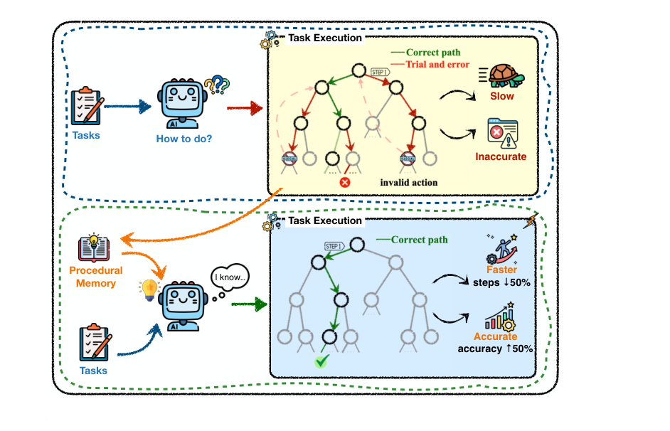
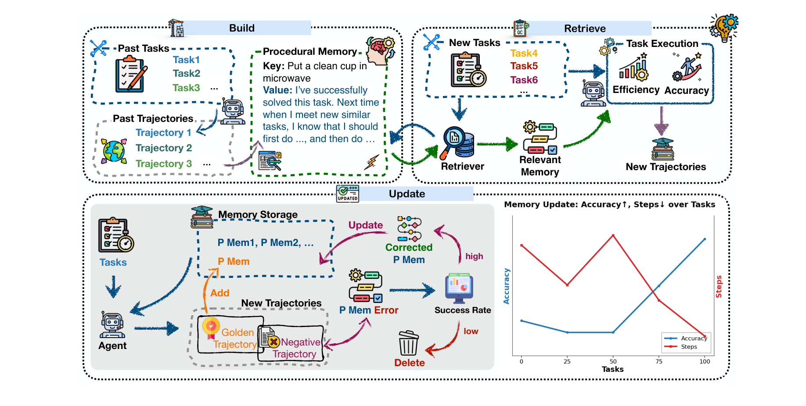
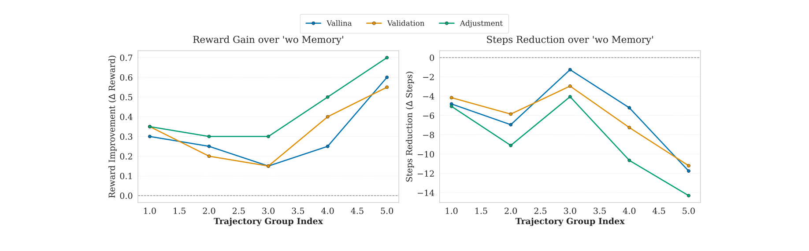
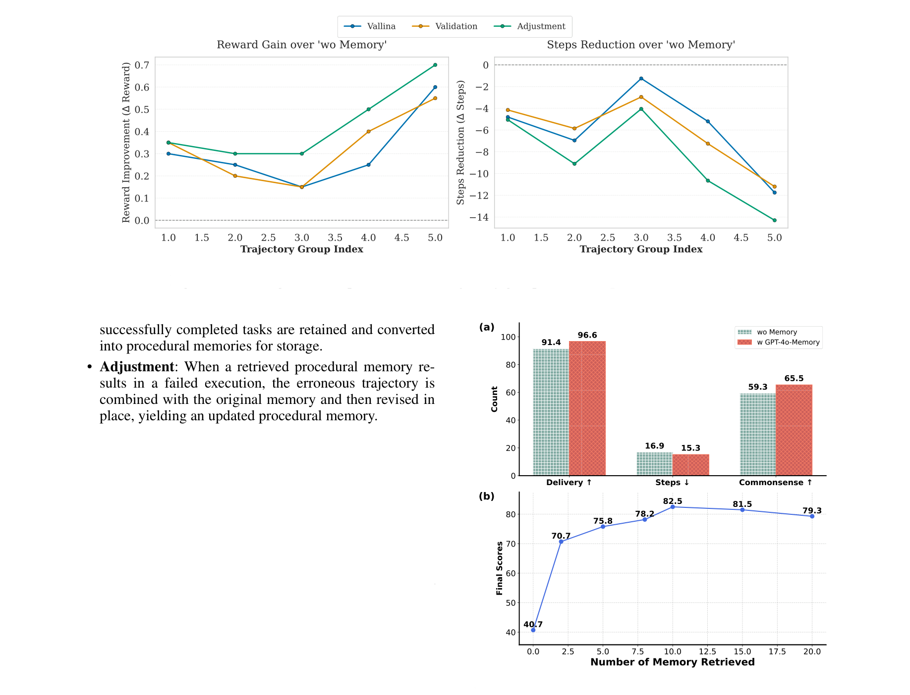
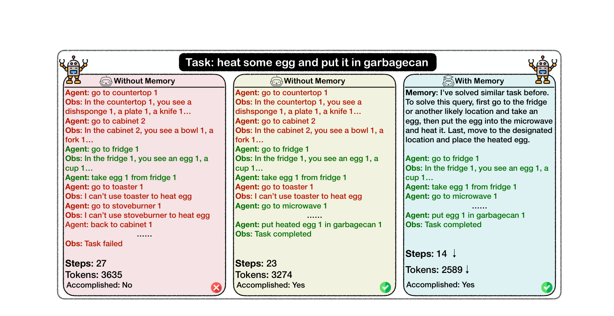

深度拆解浙大 × 阿里《Memp: Exploring Agent Procedural Memory》
文章名字：Memp: Exploring Agent Procedural Memory
作者与机构：Runnan Fang, Yuan Liang（共同一作）, Xiaobin Wang, Jialong Wu, Shuofei Qiao, Pengjun Xie, Fei Huang, Huajun Chen, Ningyu Zhang（通讯）。浙江大学 × 阿里巴巴集团
期刊与会议：arXiv:2508.06433v2（2025.08，预印本，AAAI 系作者群）
论文类型：Method（系统性方法探索 / 实验研究）
一句话定位：把“程序性记忆”从模糊的概念变成一个可被显式构建、检索、更新与弃用的一等优化对象，并系统性地对比 Build / Retrieve / Update 三大生命周期的策略组合。
问题：基于大语言模型（LLM）的智能体在复杂长程任务上表现亮眼，但它们的“程序性记忆（procedural memory）”极其脆弱——要么是手工拼装的 prompt 模板，要么是纠缠在静态模型参数里、更新代价高昂。一旦遭遇网络抖动、UI 变更、数据 schema 漂移等突发外部事件，整个执行链路就会被推翻，被迫从零重试。
方法：提出 Memp，一个任务无关（task-agnostic）的框架，把程序性记忆当作核心优化对象。它把历史成功轨迹蒸馏为两类记忆——细粒度的逐步指令与更高层的脚本式抽象，并系统探索 Build（构建）、Retrieval（检索）、Update（更新）三个阶段的最佳策略组合。
贡献：不同于以往“只追加不维护”的记忆机制，Memp 引入一套动态更新机制（增 / 校验 / 反思修正 / 动态弃用），让记忆库随新经验持续演进、纠错与裁剪，使经验积累真正“改善”而非“侵蚀”性能。
结果：在 TravelPlanner 与 ALFWorld 两个基准上，随记忆库不断精炼，Agent 在同类任务上的成功率与效率持续上升；且强模型蒸馏出的记忆可迁移到弱模型——把 GPT-4o 的记忆迁移到 Qwen2.5-14B，后者成功率提升、步数显著下降。

图 1：拥有程序性记忆后，Agent 在求解相似任务时既能提升准确率（accuracy ↑），又能压缩执行步数（steps ↓）。
前置概念
程序性记忆（Procedural Memory）：人类长时记忆的一类，负责“知道怎么做”（如打字、骑车），一旦习得便能不假思索地自动执行——对应 Agent 中可复用的推理模式、工具序列与故障恢复策略。
MDP 建模：把 Agent 与环境的交互抽象为马尔可夫决策过程，状态 st、动作 at、转移与观测 Ot 串成轨迹 τ，为后续“从轨迹蒸馏经验”提供形式化基础。
记忆增强 Agent：LangGraph、AutoGPT、Memory Bank、Soar 等只给出粗粒度抽象（缓冲区、规则块、产生式系统），却把“如何构建 / 索引 / 修补 / 裁剪技能”这一生命周期优化问题基本留白。
赛道全景
当前让 Agent“从经验中学习”大致分四派：强化学习样本效率低、易灾难性遗忘；经验回放 / 模仿学习依赖高质量数据；记忆管理多停留在“只读式”语义检索；程序性记忆方向（Voyager、AWM、AutoManual）已证明把技能沉淀下来可复用，但缺乏对构建-检索-更新全链路的系统性对比——这正是 MemP 切入的空白。
出现契机（Why Now?）
Deep Research、WebDancer 等长程 Agent 兴起，单任务动辄数十步、运行数十分钟，重试成本高到不可接受；同时强模型（GPT-4o / Claude / Qwen）的反思与代码生成能力成熟，使得“把轨迹蒸馏成结构化经验”第一次具备工程可行性。
技术瓶颈：复杂任务表面千差万别，深层却共享相似的结构与环境。现有 Agent 每次都“从零开始”，把大量 token / 步数浪费在反复理解同一环境上；而已有的记忆机制要么只追加不维护（merge 策略，垃圾越攒越多），要么把知识锁死在难更新的模型参数里。
研究动机：作者不急于再造一个“更强”的单点方法，而是把视角拉高——把程序性记忆的全生命周期作为研究对象，回答一个被回避的问题：构建、检索、更新到底该用哪种策略？只有回答了这个问题，才能保证新经验“改善”而非“侵蚀”性能。
创新概述：Memp 的整体思想是把策略 π(at|st) 升级为 πmp(at|st)——其中 mp 是 Agent 学到的程序性记忆。整个框架（见下图）由三大模块闭环组成：Build（构建）把过去轨迹编码进记忆库；Retrieve（检索）为新任务召回最相关的记忆；Update（更新）用执行反馈动态增删改记忆。图中左侧蓝灰色模块对应历史轨迹与记忆存储，中间橙色流程线表示检索召回，右侧绿色箭头表示执行后回写更新。

图 2：程序性记忆框架由 Build / Retrieve / Update 构成闭环，分别负责编码存储、召回匹配、依据新经验修正记忆。
形式化定义
对任务轨迹 τ 与奖励 r，构建器 B 生成记忆单元：
(3) Mem = T∑t=1 mpt, 其中 mpt = B(τt, rt)
检索阶段用向量嵌入模型 φ 的余弦相似度，为新任务 tnew 召回最匹配的记忆：
(5) mretrieved = arg max φ(tnew) · φ(ti)‖φ(tnew)‖ ‖φ(ti)‖
更新机制被建模为一个把当前记忆与执行反馈映射到新记忆的函数，可进一步细化为“增 / 删 / 改”三操作复合：
(7) U = Add(Mnew) ⊖ Remove(Mobso) ⊕ Update(Mexist)
子模块细节穷尽
① Build 策略（记忆如何被构造）。对比三种粒度：Script（让模型把成功轨迹总结成高层脚本式指南，泛化性好）、Trajectory（直接存完整执行轨迹，对相似任务拟合更好）、Proceduralization（把脚本指南 + 具体轨迹二者结合）。关键洞察：脚本更擅长迁移到不同测试任务，轨迹更适合处理与已完成任务高度相似的场景，二者融合取得最优。
② Retrieve 策略（记忆如何被召回）。对比三种键构建方式：Random Sample（随机抽几条，作 baseline）、Key=Query（用查询描述本身作键，依赖语义相似度）、Key=AveFact（用大模型从查询中抽取关键词，再对所有匹配关键词的相似度取平均，聚焦核心任务要素）。结论：Query 与 AveFact 显著优于随机，AveFact 在 TravelPlanner 上整体最佳。
③ Update 策略（记忆如何被维护）——本文最大亮点。每完成 t 个测试任务后刷新一次记忆库，对比三种在线更新：Vanilla（把所有轨迹直接追加）、Validation（仅保留成功任务的轨迹）、Adjustment（基于反思的纠错机制：当召回的记忆导致执行失败，把错误轨迹与原记忆合并后原地修订）。反思式 Adjustment 表现最强，最终组相比次优策略高 +0.7 分、步数少 14 步。
④ 跨模型迁移与检索扩缩。强模型离线蒸馏的记忆库可直接给弱模型用；GPT-4o 的记忆迁移到 Qwen2.5-14B，在 TravelPlanner 上成功率 +5%、平均步数 -1.6。同时召回记忆数并非越多越好——随召回量增加性能先升后平台期，召回过多反而因上下文膨胀与噪声记忆干扰而下降。
实验配置：两个互补基准——TravelPlanner（复杂约束下的工具与规划能力，#CS / #HC / Steps）与 ALFWorld（家务长程任务，Dev / Test / Steps）。三个骨干：GPT-4o、Claude-3.5-sonnet、Qwen2.5-72B-Instruct。对比公平：同一记忆库构建-检索-更新策略在三大模型上横向铺开，所有指标统一（↑ 越大越好，↓ 越小越好）。
表 1：Build 策略对比（TravelPlanner & ALFWorld）
| Model | Granularity | #CS↑ | #HC↑ | Steps↓ | Dev↑ | Test↑ | Steps↓ |
|---|---|---|---|---|---|---|---|
| TravelPlanner ALFWorld | |||||||
| GPT-4o | No Memory | 71.93 | 12.88 | 17.84 | 39.28 | 42.14 | 23.76 |
| Script | 72.08 | 5.50 | 15.79 | 66.67 | 56.43 | 18.52 | |
| Trajectory | 76.02 | 8.25 | 14.64 | 67.17 | 74.29 | 16.49 | |
| Proceduralization | 79.94 | 9.76 | 14.62 | 87.14 | 77.86 | 15.01 | |
表注：#CS / #HC 分别为常识约束与硬约束通过率；粗体为最优，下划线为次优。Proceduralization（脚本 + 轨迹融合）在 GPT-4o 上全面提升。
表 2：Retrieve 策略对比（TravelPlanner）
| Model | Policy | #CS↑ | #HC↑ | Steps↓ |
|---|---|---|---|---|
| GPT-4o | No Memory | 71.93 | 12.88 | 17.84 |
| Random Sample | 74.59 | 6.72 | 15.12 | |
| Key=Query | 73.38 | 8.95 | 15.44 | |
| Key=AveFact | 76.02 | 8.25 | 14.64 | |
| Claude-3.5 | No Memory | 63.49 | 33.06 | 18.84 |
| Random Sample | 63.99 | 29.91 | 17.93 | |
| Key=Query | 64.93 | 28.56 | 17.60 | |
| Key=AveFact | 65.76 | 29.61 | 17.72 |
表注：Key=AveFact（关键词平均相似度）整体最优；Claude 的 #HC 上 No Memory 反而最高，记忆检索引入的噪声会伤害硬约束推理。

图 3：随轨迹组数增加，三种更新策略的奖励增益（左）与步数压缩（右）持续上升，反思式 Adjustment 增长最陡。
迁移与扩缩实验：图 4 (a) 显示 GPT-4o 蒸馏的记忆迁移到 Qwen2.5-14B 后，Delivery / Steps / Commonsense 三项均显著改善（如 Commonsense 通过率 59.3 → 65.5）；图 4 (b) 显示召回记忆数从 0 增到约 12.5 条时分数持续上升至 82.5，再继续增加反而回落——存在一个“召回甜点区”。

图 4：(a) 强模型记忆迁移到弱模型的收益；(b) 召回记忆数量与性能呈“先升后降”的非单调关系。

图 5：“热鸡蛋并扔进垃圾桶”任务——无记忆 27 步失败、23 步勉强完成；有记忆 14 步一次成功，省 9 步、省 685 token。
本文由 paper-reviewer 拆解生成 · 论文来源：arXiv:2508.06433v2